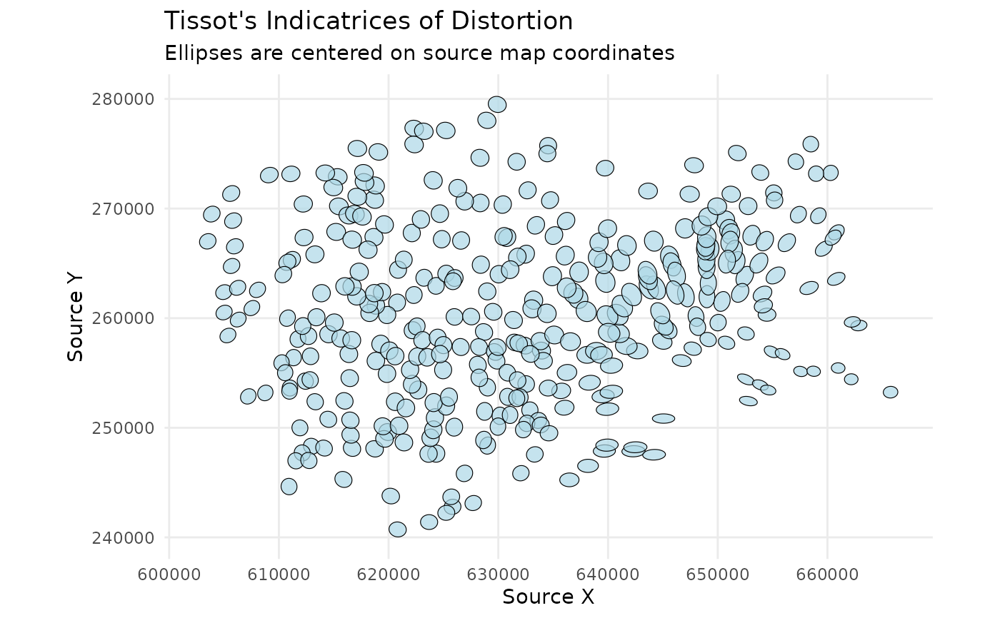

plot_indicatrices.RdVisualizes distortion by drawing Tissot's indicatrices (ellipses) at their original source locations.
plot_indicatrices(
distortion_sf,
scale_factor = 1,
fill_color = "lightblue",
border_color = "black"
)An sf object of points returned by analyze_distortion().
It must contain the columns a, b, and theta_a.
A numeric value to control the size of the plotted ellipses for better visibility. You will need to adjust this based on your map's scale.
A character string specifying the fill color of the ellipses.
A character string specifying the border color of the ellipses.
A ggplot object containing the distortion ellipses plotted in the
source coordinate space.
This function creates a powerful visual representation of distortion, following
the methodology of Boùùaert et al. (2016). It takes the results from
analyze_distortion() and draws an ellipse at each analyzed point, centered
on its source coordinate. This allows for a direct visual assessment of
distortion on the historical map's geographic space.
Each ellipse graphically shows the magnitude and direction of distortion at that location:
The shape of the ellipse shows the angular distortion (shear).
The size of the ellipse shows the areal distortion.
The orientation of the ellipse shows the direction of maximum scale.
# --- 1. Train a model and analyze distortion ---
data(gcps)
gam_model <- train_pai_model(gcps, method = "gam")
#> Training 'gam' model...
distortion_at_gcps <- analyze_distortion(gam_model, gcps)
#> Calculating distortion metrics for gam model...
#> Finalizing metrics from derivatives...
#> Distortion analysis complete.
# --- 2. Plot the indicatrices ---
# Note that the pai_model is no longer needed. The function plots the
# distortion centered on the source locations from the distortion_sf object.
# The scale_factor needs to be large enough to make the ellipses visible.
plot_indicatrices(
distortion_sf = distortion_at_gcps,
scale_factor = 20
)
#> Generating indicatrix polygons at source locations...
